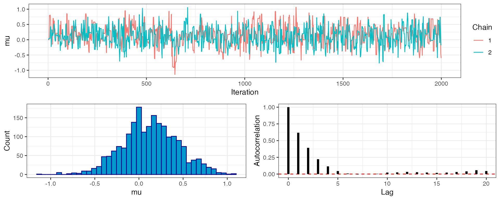

vignettes/parallel.Rmd
parallel.RmdRunning multiple chains is a good way of checking that our MCMC is working well. Each chain is completely independent of all others, and so this qualifies as an embarrassingly parallel problem.
This vignette will demonstrate how to run drjacoby with multiple chains, first in serial and then in parallel over multiple cores.
As always, we require some data, some parameters, and some functions to work with (see earlier examples). The underlying model is not our focus here, so we will use a very basic setup
# define data
data_list <- list(x = rnorm(10))
# define parameters dataframe
df_params <- data.frame(name = "mu", min = -10, max = 10, init = 0)
# define loglike function
r_loglike <- function(params, data, misc) {
sum(dnorm(data$x, mean = params["mu"], sd = 1.0, log = TRUE))
}
# define logprior function
r_logprior <- function(params, misc) {
dunif(params["mu"], min = -10, max = 10, log = TRUE)
}Whenever the input argument cluster is NULL, chains will run in serial. This is true by default, so running multiple chains in serial is simply a case of specifying the chains argument:
# run MCMC in serial
mcmc <- run_mcmc(data = data_list,
df_params = df_params,
loglike = r_loglike,
logprior = r_logprior,
burnin = 1e3,
samples = 1e3,
chains = 2,
pb_markdown = TRUE)
#> MCMC chain 1
#> burn-in
#>
|
|======================================================================| 100%
#> acceptance rate: 22.8%
#> sampling phase
#>
|
|======================================================================| 100%
#> acceptance rate: 23.4%
#> chain completed in 0.074593 seconds
#> MCMC chain 2
#> burn-in
#>
|
|======================================================================| 100%
#> acceptance rate: 23.1%
#> sampling phase
#>
|
|======================================================================| 100%
#> acceptance rate: 23.5%
#> chain completed in 0.079734 secondsWhen we look at our MCMC output (using the plot_par() function) we can see that there are 2 chains, each of which contains independent draws from the posterior. If we used multiple temperature rungs then these would also be duplicated over chains.
# summarise output
mcmc
#> drjacoby output:
#> 2 chains
#> 1 rungs
#> 1000 burn-in iterations
#> 1000 sampling iterations
#> 1 parameters
# compare mu over both chains
plot_par(mcmc, "mu", phase = "both")
Running in parallel is only slightly more complex. Before running anything we need to know how many cores our machine has. You may know this number already, but if you don’t then the parallel package has a handy function for detecting the number of cores for you:
cores <- parallel::detectCores()Next we make a cluster object, which creates multiple copies of R running in parallel over different cores. Here we are using all available cores, but if you want to hold some back for other intensive tasks then simply use a smaller number of cores when specifying this cluster.
cl <- parallel::makeCluster(cores)We then run the usual run_mcmc() function, this time passing in the cluster object as an argument. This causes drjacoby to use a clusterApplyLB() call rather than an ordinary lapply() call over different chains. Each chain is added to a queue over the specified number of cores - when the first job completes, the next job is placed on the node that has become available and this continues until all jobs are complete.
Note that output is supressed when running in parallel to avoid sending print commands to multiple cores, so you will not see the usual progress bars.
# run MCMC in parallel
mcmc <- run_mcmc(data = data_list,
df_params = df_params,
loglike = r_loglike,
logprior = r_logprior,
burnin = 1e3,
samples = 1e3,
chains = 2,
cluster = cl,
pb_markdown = TRUE)Finally, it is good practice to shut down the workers once we are finished:
parallel::stopCluster(cl)Running chains in parallel tends to be faster than running in serial, although remember that you will see a delay the first time you run a new set of functions as the likelihood and prior must compile on every node.